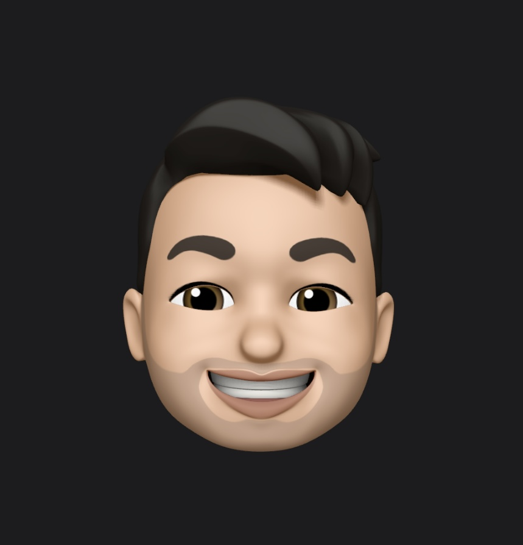

Cesar Ortiz Portfolio
Web Design
👋 Hello There! I'm Cesar Ortiz, a passionate and creative Web and UI/UX Designer based in the heart of innovation. With a fervent heart for design and an unyielding commitment to enhancing user experience, I've devoted my career to crafting digital spaces that are not only visually stunning but also intuitively functional.
Here, in my digital abode, you'll embark on a journey through a curated showcase of my most compelling projects. Each piece is a testament to my love for design, my dedication to solving complex user experience challenges, and my continuous pursuit of pushing the boundaries of what's possible on the web.
